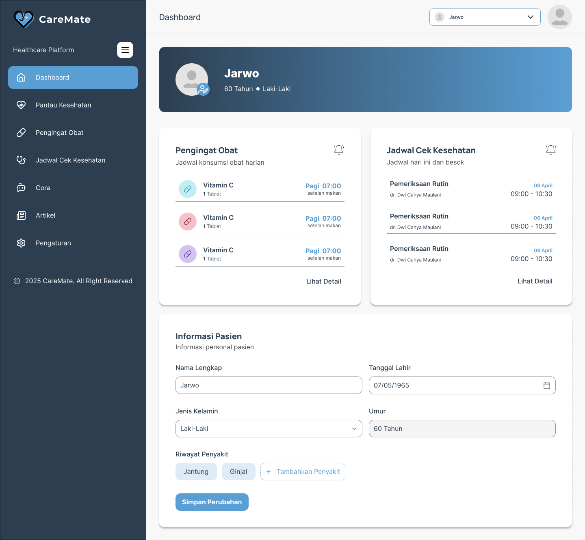
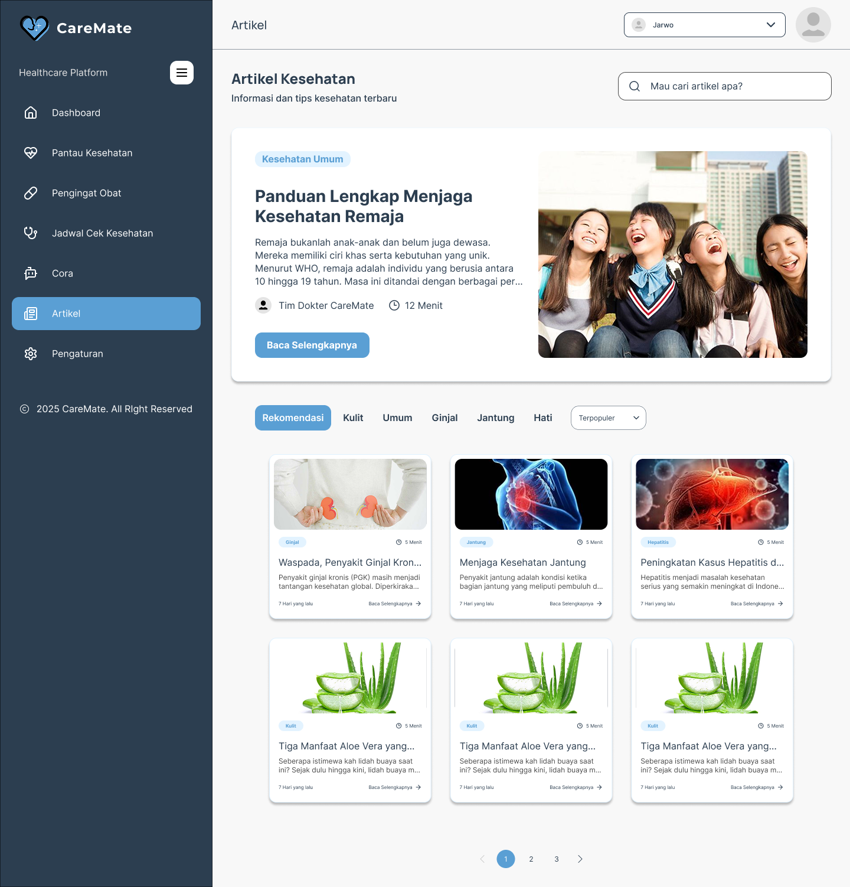
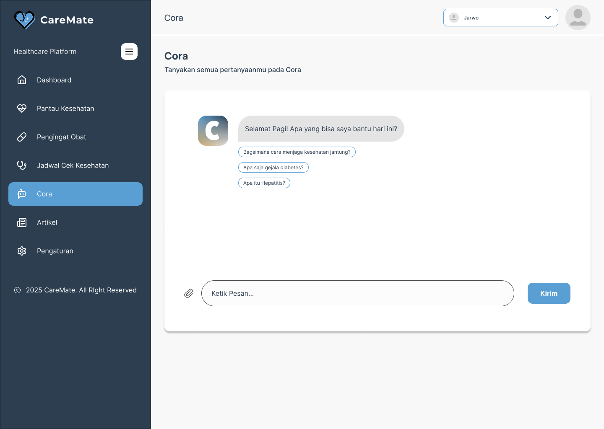

CareMate
Product Manager
Figma
Apr 2025
Project Description
CareMate is a web-based health monitoring platform designed to help families monitor the health conditions of elderly parents remotely. The project addresses challenges faced by busy family members who struggle to consistently track routine health data such as blood pressure, blood sugar, cholesterol, and medication schedules. Developed for the CodeFest UI/UX Competition, CareMate applies a human-centered innovation approach, ensuring that the solution is grounded in real user problems, validated needs, and practical daily usage scenarios.
Dashboard Overview
Displays a summarized view of patient information, medication reminders, and upcoming health check schedules, allowing caregivers to quickly monitor overall health status in one place.
Health Monitoring
Tracks key health metrics such as BMI, blood sugar, blood pressure, and cholesterol through simple charts, helping users understand health trends over time.

Medication Reminder
Manages daily medication schedules with intake confirmation and history tracking to ensure patients take their medicine on time and consistently.

Health Check Schedule
Allows users to plan, view, and manage medical check-up schedules using a calendar-based system to prevent missed appointments.

Health Articles
Provides categorized and searchable health articles to support users with reliable information and daily health education.
Cora - AI Health Assistant
An AI-powered assistant that answers common health questions, explains medical terms, and provides basic health guidance in an accessible way.
Process
Problem Discovery & Validation
I initiated the project by identifying real-world problems faced by families with elderly parents, supported by secondary research and contextual analysis. The problem was validated through user observations and literature references related to elderly health monitoring and family caregiving challenges.
User Research & Insight Synthesis
User research was conducted to understand user behavior, pain points, and expectations. Insights from this stage were synthesized into clear problem statements and opportunity areas that guided product direction.
Solution Definition & Feature Prioritization
Based on validated insights, I defined the core solution concept and prioritized features that directly addressed user needs, balancing feasibility, impact, and usability.
Wireframing & Product Structuring
I translated product requirements into low-fidelity wireframes, defining user flows, feature hierarchy, and interaction logic to ensure clarity before entering the visual design phase.
Iterative Evaluation
The solution concept and wireframes were evaluated through feedback sessions, allowing refinements to ensure alignment with user expectations and competition objectives.